4.1 Coding an LLM Architecture
This Chapter Covers
- Coding a GPT-like large language model (LLM) that can be trained to generate human-like text
- Normalizing layer activations to stabilize neural network training
- Adding shortcut connections in deep neural networks
- Implementing transformer blocks to create GPT models of various sizes
- Computing the number of parameters and storage requirements of GPT models
LLMs such as GPT (generative pretrained transformer) are large deep neural network architectures designed to generate new text one word (or token) at a time. Despite their size, the model architecture is less complicated than one might think, since many components are repeated.
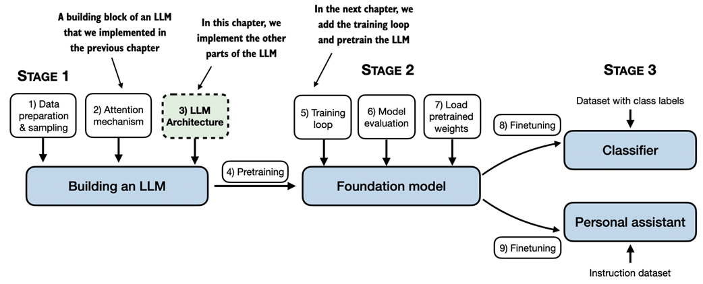
From the book (Raschka, 2025)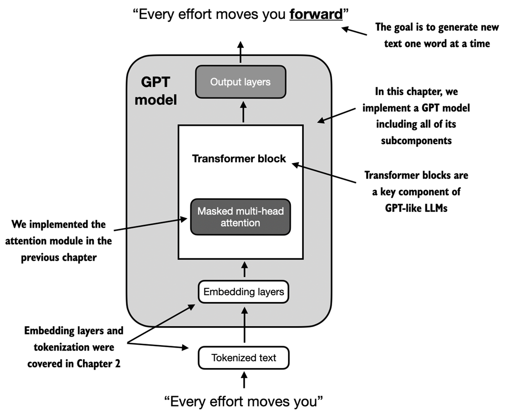
From the book (Raschka, 2025)GPT-2 vs. GPT-3
- We focus on GPT-2 because OpenAI made the weights publicly available
- GPT-3 is fundamentally the same architecture, scaled from 1.5B to 175B parameters and trained on more data
- GPT-2 can run on a single laptop; GPT-3 requires a GPU cluster
- Training GPT-3 would take 355 years on a single V100 datacenter GPU
GPT_CONFIG_124M Configuration
GPT_CONFIG_124M = {
"vocab_size": 50257, # Vocabulary size
"context_length": 1024, # Context length
"emb_dim": 768, # Embedding dimension
"n_heads": 12, # Number of attention heads
"n_layers": 12, # Number of layers
"drop_rate": 0.1, # Dropout rate
"qkv_bias": False # Query-Key-Value bias
}
- vocab_size (50,257): vocabulary used by the BPE tokenizer
- context_length (1,024): maximum input tokens via positional embeddings
- emb_dim (768): each token becomes a 768-dimensional vector
- n_heads (12): attention heads in multi-head attention
- n_layers (12): number of transformer blocks
- drop_rate (0.1): 10% dropout to prevent overfitting
- qkv_bias (False): no bias in Q/K/V linear layers, following modern LLM norms
Listing 4.1: A Placeholder GPT Model
import torch
import torch.nn as nn
class DummyGPTModel(nn.Module):
def __init__(self, cfg):
super().__init__()
self.tok_emb = nn.Embedding(cfg["vocab_size"], cfg["emb_dim"])
self.pos_emb = nn.Embedding(cfg["context_length"], cfg["emb_dim"])
self.drop_emb = nn.Dropout(cfg["drop_rate"])
self.trf_blocks = nn.Sequential(
*[DummyTransformerBlock(cfg)
for _ in range(cfg["n_layers"])])
self.final_norm = DummyLayerNorm(cfg["emb_dim"])
self.out_head = nn.Linear(
cfg["emb_dim"], cfg["vocab_size"], bias=False)
def forward(self, in_idx):
batch_size, seq_len = in_idx.shape
tok_embeds = self.tok_emb(in_idx)
pos_embeds = self.pos_emb(
torch.arange(seq_len, device=in_idx.device))
x = tok_embeds + pos_embeds
x = self.drop_emb(x)
x = self.trf_blocks(x)
x = self.final_norm(x)
logits = self.out_head(x)
return logits
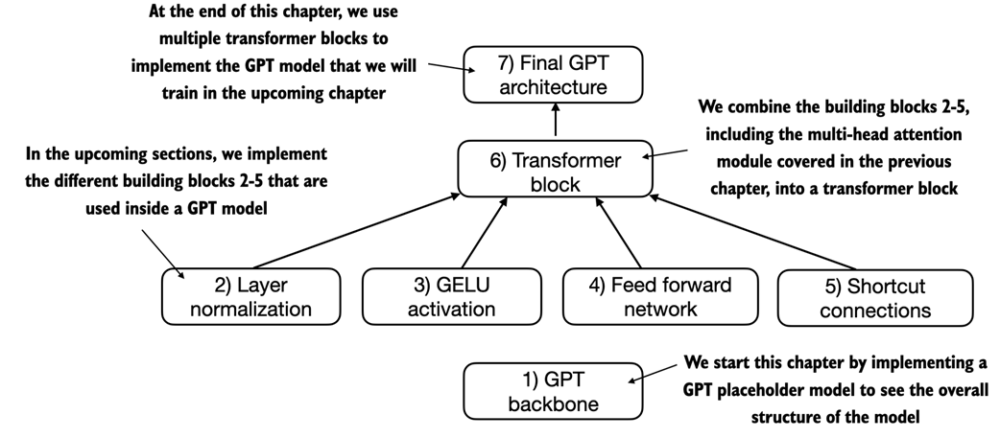
From the book (Raschka, 2025)4.2 Normalizing Activations with Layer Normalization
Training deep neural networks with many layers can be challenging due to vanishing or exploding gradients. Layer normalization improves stability by adjusting the activations of a neural network layer to have a mean of 0 and a variance of 1 (unit variance).
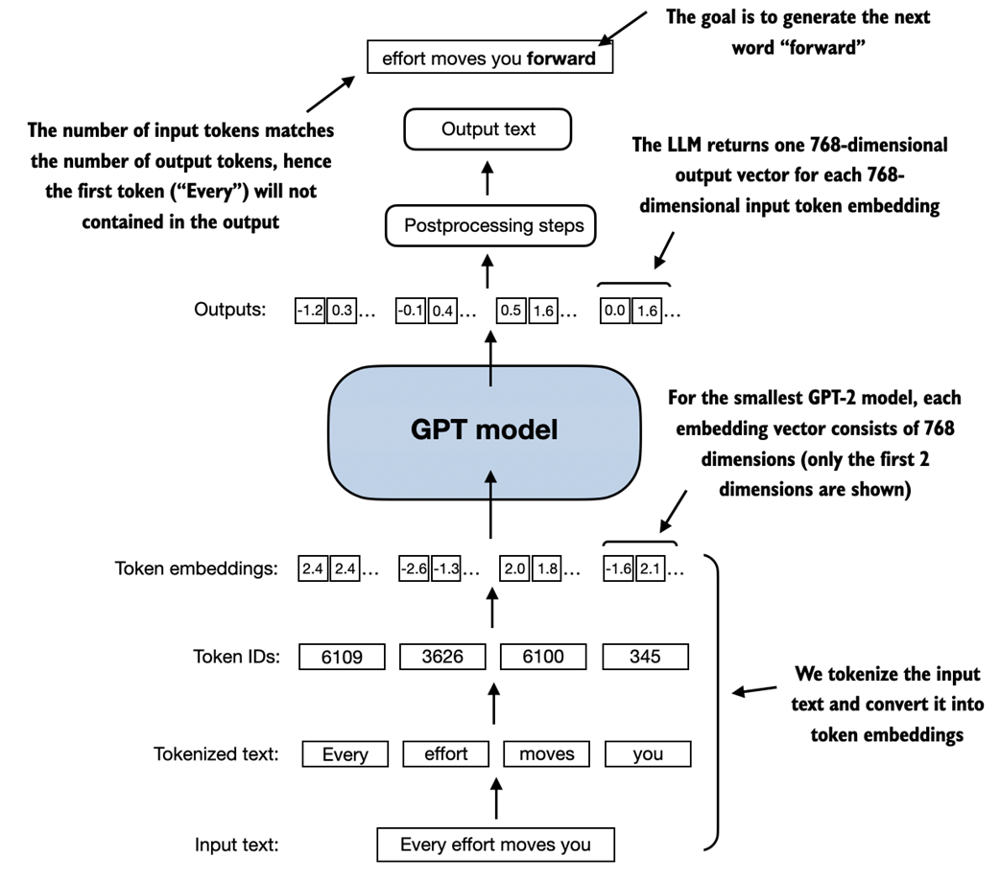
From the book (Raschka, 2025)Step-by-Step Layer Normalization
torch.manual_seed(123) batch_example = torch.randn(2, 5) layer = nn.Sequential(nn.Linear(5, 6), nn.ReLU()) out = layer(batch_example) mean = out.mean(dim=-1, keepdim=True) var = out.var(dim=-1, keepdim=True) out_norm = (out - mean) / torch.sqrt(var) # Normalized outputs now have ~0 mean and ~1 variance
Listing 4.2: A Layer Normalization Class
class LayerNorm(nn.Module):
def __init__(self, emb_dim):
super().__init__()
self.eps = 1e-5
self.scale = nn.Parameter(torch.ones(emb_dim))
self.shift = nn.Parameter(torch.zeros(emb_dim))
def forward(self, x):
mean = x.mean(dim=-1, keepdim=True)
var = x.var(dim=-1, keepdim=True, unbiased=False)
norm_x = (x - mean) / torch.sqrt(var + self.eps)
return self.scale * norm_x + self.shift
- eps: small constant added to variance to prevent division by zero
- scale and shift: trainable parameters the LLM learns during training
- Uses
unbiased=False(divides by n instead of n-1) for compatibility with GPT-2 pretrained weights
4.3 Implementing a Feed Forward Network with GELU Activations
GELU Activation Function
While ReLU was historically common, LLMs use more sophisticated activations. GELU (Gaussian Error Linear Unit) is a smooth, nonlinear function that approximates ReLU but with a non-zero gradient for almost all negative values.
GELU(x) = 0.5 * x * (1 + tanh(sqrt(2/pi) * (x + 0.044715 * x3)))
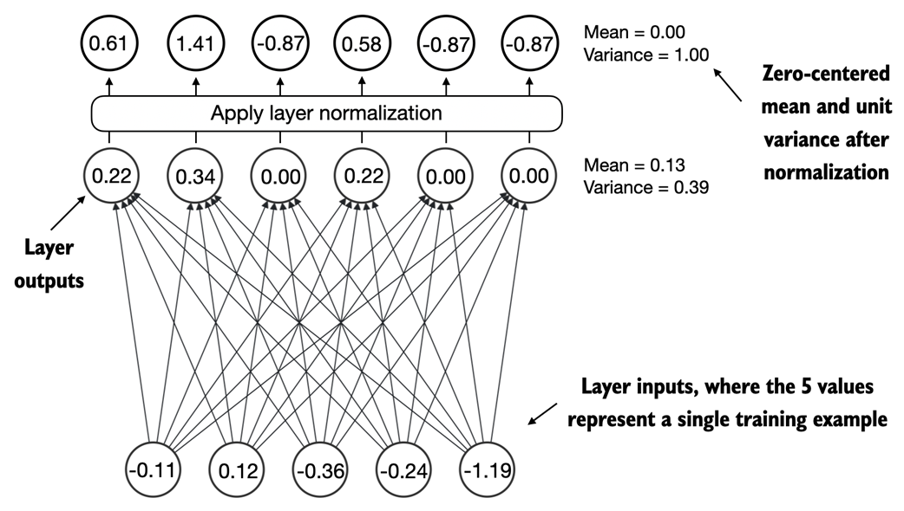
From the book (Raschka, 2025)class GELU(nn.Module):
def __init__(self):
super().__init__()
def forward(self, x):
return 0.5 * x * (1 + torch.tanh(
torch.sqrt(torch.tensor(2.0 / torch.pi)) *
(x + 0.044715 * torch.pow(x, 3))
))
Listing 4.4: A Feed Forward Neural Network Module
class FeedForward(nn.Module):
def __init__(self, cfg):
super().__init__()
self.layers = nn.Sequential(
nn.Linear(cfg["emb_dim"], 4 * cfg["emb_dim"]),
GELU(),
nn.Linear(4 * cfg["emb_dim"], cfg["emb_dim"]),
)
def forward(self, x):
return self.layers(x)
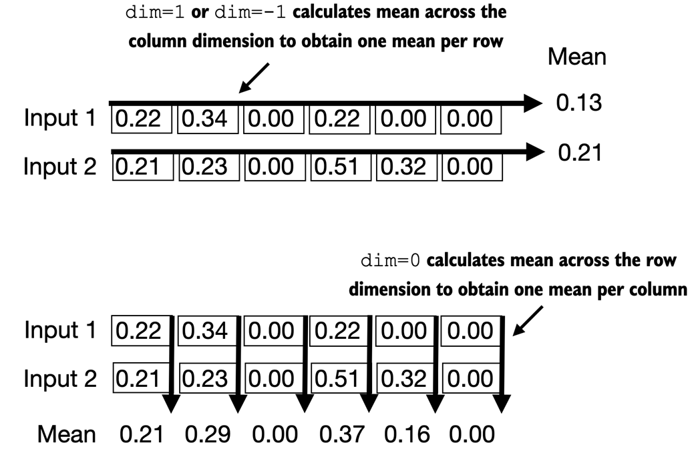
From the book (Raschka, 2025)4.4 Adding Shortcut Connections
Shortcut connections (also known as skip connections or residual connections) create an alternative, shorter path for the gradient to flow through the network by adding the output of one layer to the output of a later layer. They are crucial for mitigating the vanishing gradient problem.
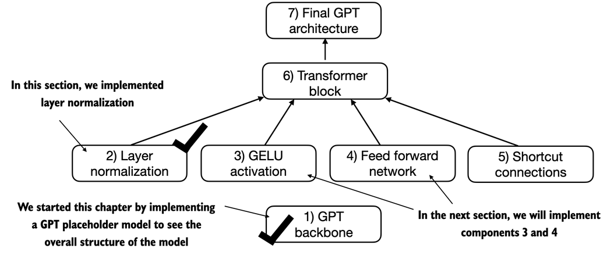
From the book (Raschka, 2025)class ExampleDeepNeuralNetwork(nn.Module):
def __init__(self, layer_sizes, use_shortcut):
super().__init__()
self.use_shortcut = use_shortcut
self.layers = nn.ModuleList([
nn.Sequential(nn.Linear(layer_sizes[0], layer_sizes[1]),
GELU()),
nn.Sequential(nn.Linear(layer_sizes[1], layer_sizes[2]),
GELU()),
# ... 5 layers total
])
def forward(self, x):
for layer in self.layers:
layer_output = layer(x)
if self.use_shortcut and x.shape == layer_output.shape:
x = x + layer_output # Shortcut connection
else:
x = layer_output
return x
# layers.0.0.weight has gradient mean of 0.00020 # layers.1.0.weight has gradient mean of 0.00012 # layers.2.0.weight has gradient mean of 0.00071 # layers.3.0.weight has gradient mean of 0.00139 # layers.4.0.weight has gradient mean of 0.00504
# layers.0.0.weight has gradient mean of 0.22169 # layers.1.0.weight has gradient mean of 0.20694 # layers.2.0.weight has gradient mean of 0.32896 # layers.3.0.weight has gradient mean of 0.26657 # layers.4.0.weight has gradient mean of 1.32585
4.5 Connecting Attention and Linear Layers in a Transformer Block
The transformer block is the fundamental building block of GPT, repeated 12 times in the 124M-parameter GPT-2. It combines multi-head attention, layer normalization, dropout, feed forward layers, and GELU activations, preserving input dimensionality throughout.
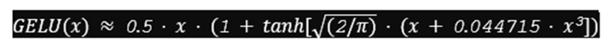
From the book (Raschka, 2025)class TransformerBlock(nn.Module):
def __init__(self, cfg):
super().__init__()
self.att = MultiHeadAttention(
d_in=cfg["emb_dim"],
d_out=cfg["emb_dim"],
context_length=cfg["context_length"],
num_heads=cfg["n_heads"],
dropout=cfg["drop_rate"],
qkv_bias=cfg["qkv_bias"])
self.ff = FeedForward(cfg)
self.norm1 = LayerNorm(cfg["emb_dim"])
self.norm2 = LayerNorm(cfg["emb_dim"])
self.drop_shortcut = nn.Dropout(cfg["drop_rate"])
def forward(self, x):
shortcut = x # Shortcut for attention block
x = self.norm1(x)
x = self.att(x)
x = self.drop_shortcut(x)
x = x + shortcut # Add original input back
shortcut = x # Shortcut for feed forward block
x = self.norm2(x)
x = self.ff(x)
x = self.drop_shortcut(x)
x = x + shortcut # Add original input back
return x
torch.manual_seed(123)
x = torch.rand(2, 4, 768)
block = TransformerBlock(GPT_CONFIG_124M)
output = block(x)
print("Input shape:", x.shape) # torch.Size([2, 4, 768])
print("Output shape:", output.shape) # torch.Size([2, 4, 768])
# The transformer block maintains the input dimensions
4.6 Coding the GPT Model
We now replace the placeholder classes with the real TransformerBlock and LayerNorm to assemble a fully working version of the 124-million-parameter GPT-2.
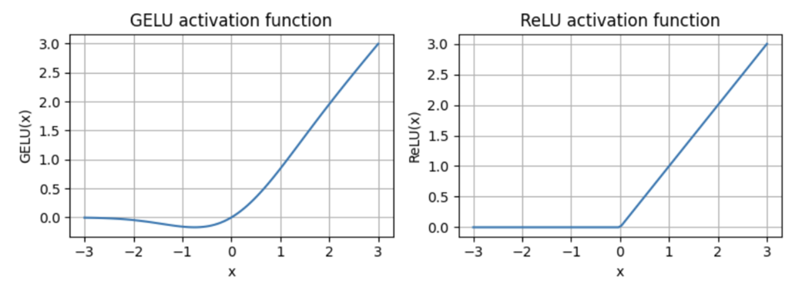
From the book (Raschka, 2025)class GPTModel(nn.Module):
def __init__(self, cfg):
super().__init__()
self.tok_emb = nn.Embedding(cfg["vocab_size"], cfg["emb_dim"])
self.pos_emb = nn.Embedding(cfg["context_length"], cfg["emb_dim"])
self.drop_emb = nn.Dropout(cfg["drop_rate"])
self.trf_blocks = nn.Sequential(
*[TransformerBlock(cfg) for _ in range(cfg["n_layers"])])
self.final_norm = LayerNorm(cfg["emb_dim"])
self.out_head = nn.Linear(
cfg["emb_dim"], cfg["vocab_size"], bias=False)
def forward(self, in_idx):
batch_size, seq_len = in_idx.shape
tok_embeds = self.tok_emb(in_idx)
pos_embeds = self.pos_emb(
torch.arange(seq_len, device=in_idx.device))
x = tok_embeds + pos_embeds
x = self.drop_emb(x)
x = self.trf_blocks(x)
x = self.final_norm(x)
logits = self.out_head(x)
return logits
Parameter Count Analysis
torch.manual_seed(123)
model = GPTModel(GPT_CONFIG_124M)
total_params = sum(p.numel() for p in model.parameters())
print(f"Total number of parameters: {total_params:,}")
# Total number of parameters: 163,009,536
Memory Requirements
total_size_bytes = total_params * 4 # 32-bit floats = 4 bytes each
total_size_mb = total_size_bytes / (1024 * 1024)
print(f"Total size of the model: {total_size_mb:.2f} MB")
# Total size of the model: 621.83 MB
4.7 Generating Text
A generative model like an LLM generates text one word (or token) at a time. The GPT model outputs tensors with shape [batch_size, num_token, vocab_size], which must be converted back into text.
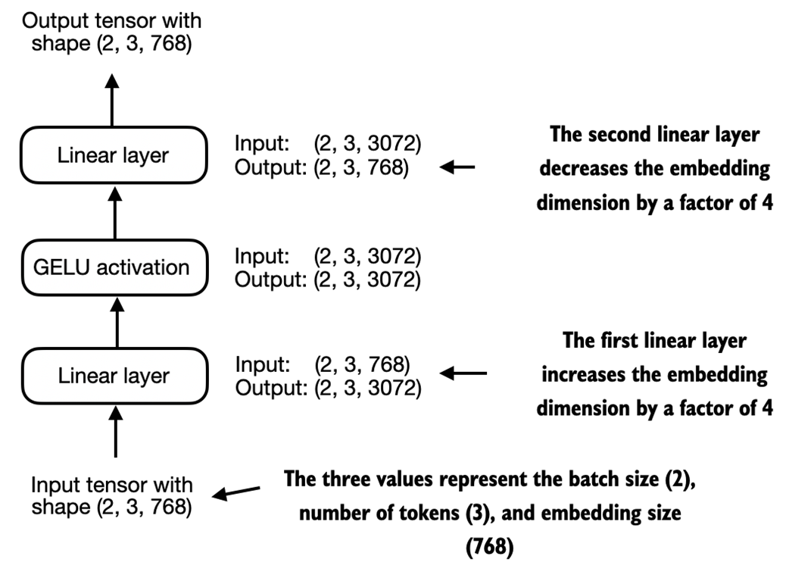
From the book (Raschka, 2025)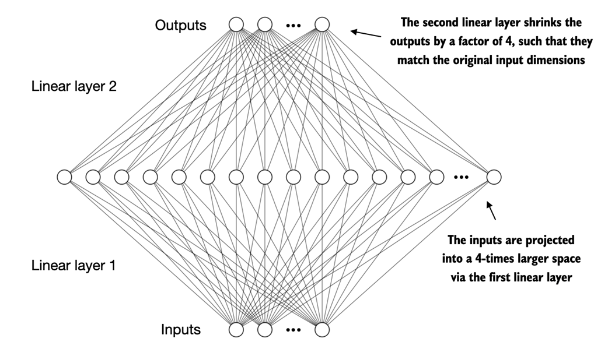
From the book (Raschka, 2025)def generate_text_simple(model, idx,
max_new_tokens, context_size):
for _ in range(max_new_tokens):
idx_cond = idx[:, -context_size:] # Crop to context window
with torch.no_grad():
logits = model(idx_cond)
logits = logits[:, -1, :] # Focus on last token
probas = torch.softmax(logits, dim=-1)
idx_next = torch.argmax(probas, dim=-1, keepdim=True)
idx = torch.cat((idx, idx_next), dim=1) # Append new token
return idx
Running Text Generation
import tiktoken
tokenizer = tiktoken.get_encoding("gpt2")
start_context = "Hello, I am"
encoded = tokenizer.encode(start_context)
encoded_tensor = torch.tensor(encoded).unsqueeze(0)
model.eval()
out = generate_text_simple(
model=model,
idx=encoded_tensor,
max_new_tokens=6,
context_size=GPT_CONFIG_124M["context_length"]
)
decoded_text = tokenizer.decode(out.squeeze(0).tolist())
print(decoded_text)
# "Hello, I am Featureiman Byeswickattribute argue"
Summary
- Layer normalization stabilizes training by ensuring each layer's outputs have a consistent mean and variance.
- Shortcut connections skip one or more layers by feeding the output of one layer directly to a deeper layer, helping mitigate the vanishing gradient problem in deep neural networks.
- Transformer blocks are the core structural component of GPT models, combining masked multi-head attention with fully connected feed forward networks using the GELU activation function.
- GPT models are LLMs with many repeated transformer blocks that have millions to billions of parameters.
- GPT models come in various sizes: 124, 345, 762, and 1,542 million parameters, all implementable with the same
GPTModelPython class. - The text-generation capability involves decoding output tensors into human-readable text by sequentially predicting one token at a time based on the input context.
- Without training, a GPT model generates incoherent text, which underscores the importance of model training for coherent text generation.